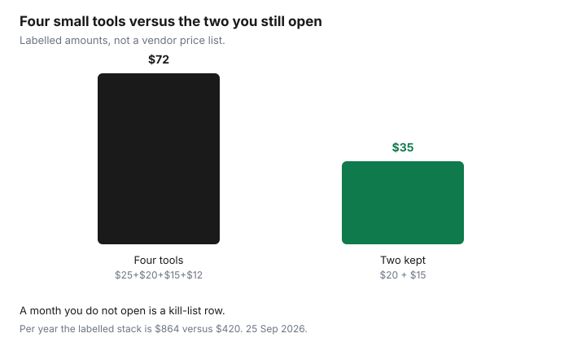

Subscriptions · Canada
Household and Side-Hustle SaaS Audit: Cut Duplicate Canadian Software Bills
A side hustle collects software the way a kitchen collects jars. A design seat for one client, an AI writer for a month of captions, a second cloud drive “so the files are safe,” an accounting app that was cheaper than a spreadsheet until nobody opened it. None of the charges is large. Together they are a grocery week, and they survive the hustle. The fix is not a new app to track the apps. It is one list, one card rule, and a quarterly kill list with the confirmation emails in a folder.
This page is the software pass. The full household export, including streaming and telecom add-ons, is the subscription audit. A charge you cannot name is the statement hunt. Adobe’s annual fee, if a design seat is Creative Cloud, is the Adobe guide: an annual plan billed monthly can cost 50 percent of the remaining balance, on Adobe’s terms page updated 17 Apr 2026. Microsoft 365 seats are the Microsoft 365 guide. Prices there were read 25 Sep 2026: Personal $115 a year, Family $145 a year.
Disclosure: Software-marketplace listings and creative-software alternatives are offer types. Saving Optimizer may earn a commission if we later add a partner link. We do not currently claim a partnership with any software vendor or marketplace. Education only. We do not rank tools. The CAD amount on your invoice is the amount.
Key takeaways
- List every software charge in six buckets: productivity, design, AI writing, storage, accounting-lite, and “other.” One row per seat, with the card and the renewal date.
- Overlaps are the waste: Canva plus Adobe Express plus a PowerPoint template subscription is three ways to make the same slide.
- Annual is cheaper per month only if you will still use the seat in month twelve. Empty seats are a cancel, not a “we might hire.”
- Business and personal cards stay apart so the audit can see the charge. A mixed card is how a tool hides.
- Once a quarter, cancel what failed the 30-day test and file the confirmation. A screenshot of the button is not a confirmation.
List every SaaS: productivity, design, AI writing, storage, accounting lite
Open the last 90 days on the personal card, the business card, PayPal, Apple, and Google Play. Software hides in all five. Write a row only when the descriptor repeats or the receipt says subscription. Columns that matter: product, bucket, CAD amount, monthly or annual, renewal date, who last opened it, and which card paid. Leave a notes column for “client work” or “household.”
- Productivity. Microsoft 365, a notes app, a team chat, a form tool. If the household already has Family seats, a second notes app needs a job the Microsoft account does not do.
- Design. Canva, Adobe Express, a template club, a font subscription. One of these is a tool. Three of them is a pile.
- AI writing. A caption generator, a research chatbot on a paid tier, a “humanizer.” Name the last deliverable that used it. If you cannot, it is a kill-list candidate.
- Storage. OneDrive, iCloud, Google One, Dropbox, a photo vault. Two paid clouds usually means files were never moved, not that you need both.
- Accounting-lite. A solo invoicing app, a receipt scanner, a tax-prep add-on. Keep the one that produces the invoice you actually send. The others are duplicates of a spreadsheet until the hustle is big enough to need them.
Do not invent a “normal” price for a category. Write the dollars on the receipt. A US-dollar charge on a Canadian card is still a Canadian-dollar posting after the conversion. Use the posting, not the US sticker you remember. If the side hustle is a business, keep the tax invoice with the row. Whether that invoice is deductible is a question for your return, not for this page. This is not tax advice.
Flag overlaps (Canva + Adobe Express + PowerPoint templates)
Put the design rows side by side and ask what each one produced in the last 30 days. Canva for a social tile, Adobe Express for the same tile, and a PowerPoint template subscription for a deck you could have built in the Microsoft 365 seat you already pay for, is one job wearing three logos. Keep the tool that holds the files you would be annoyed to rebuild. Cancel the others at period end, after you export the brand kit.
The same test works on writing tools and on storage. Two AI writers that both “do captions” are an overlap even if the marketing pages sound different. Two cloud drives are an overlap once the folders live in one of them. Adobe is the overlap that can bill a fee on the way out. If the plan is annual billed monthly, read the fee example before you click. A labelled illustration there, not a Canadian list price: eight months left at $60 is $480 remaining, and 50 percent is $240. Your confirmation screen replaces that example.

Annual vs monthly and seat counts you actually use
Annual looks thrifty on the checkout page because the monthly equivalent is lower. It is thrifty only when month twelve still has a user. A logo project that lasted six weeks does not need an annual design seat. Switch to monthly, or to the free tier, before the annual term renews. If the plan is already annual and the cancel screen shows a fee, compare the fee with the months you would still pay. Sometimes finishing the term costs less. Write both numbers down. Do not guess.
Seats are the other leak. A team chat or a design plan billed per person keeps charging for a contractor who finished in March. Count logins in the admin page, not invitations you sent. An unused seat is a removal, the same day you notice it. Microsoft’s Family plan is the household version of this rule: up to six people for $145 a year on the Store Canada page used 25 Sep 2026, against $115 for one Personal plan. A second Personal checkout while a Family seat is empty fails the seat test. AI add-ons that cannot be shared fail it too, if you bought them for people who cannot use them.
| What you see | Keep | Change or cancel |
|---|---|---|
| Opened in the last 30 days, one clear job | Yes. Calendar the renewal. | Drop to a lower tier if the invoice is for seats you do not use. |
| Two tools, one job | The one that holds the files. | Export, then cancel the other at period end. |
| Annual renewal inside 30 days, no use this quarter | Only if a dated project needs it next month. | Turn off auto-renew now. Monthly was the honest product. |
| Seat with no login since the contract ended | No. | Remove the seat today. The next invoice should show the lower count. |
Business vs personal cards—stop mixing so audits fail
A tool bought on the household Visa, “just this once,” never appears when you export the business card. A tool bought on the business card never appears in the personal 90-day hunt. The audit fails because the list is incomplete, not because you lack discipline. Pick one card for side-hustle software and stop. Personal subscriptions stay on the personal card. If a charge is already on the wrong card, move the billing inside the product, then watch both statements for one more cycle so a second copy does not start.
PayPal and app stores split the trail again. A business PayPal agreement will not show the product name on the bank line. Open automatic payments and write every active agreement into the sheet. Apple and Google Play do the same for mobile-only tools. The trial checklist is the rule for anything that started as free: the biller on day zero is the place you cancel.
Free tiers and open-source substitutes for low-frequency tools
Low frequency means you can name the last use and it was more than a month ago, or the use is a household letter rather than client work. Those tools should be on a free tier or off the card. Microsoft’s web apps cover a light document. LibreOffice and other free desktop suites cover a document you do not want in someone else’s cloud. A notes app’s free plan is enough when you are not collaborating with a client inside it. This is not a ranking and not a shopping list. It is permission to stop paying for rare use.
Do not replace a paid tool the week a deadline is due. Export first, cancel at period end, and let the free tool earn the next project. If the free tier’s limit is the thing you keep hitting, the paid seat has a job and it stays. Write that reason on the row so future you does not cancel it out of annoyance.
Quarterly kill list with cancel confirmation folder
Four dates a year is enough. Put them on the same calendar as the streaming rotation and the Microsoft expiry. The night before, sort the sheet by renewal date. Anything renewing in the next 30 days gets a yes or a no. No means cancel where the receipt says you were billed, then save the confirmation email or the confirmation page as a PDF. Name the file with the product and the date. A folder called Cancellations, with one subfolder per quarter, is the whole system.
The next statement is the check. If the charge posts after the confirmation, the email is what you send to support. If there is no confirmation, you did not cancel. You closed a tab. Empty seats and overlaps go on the kill list even when the renewal is months away, because a seat removed today changes the next invoice. Then stop. A quarterly list that tries to rebuild the entire stack in one evening gets abandoned. One in, one out, from the audit guide, still applies: a new tool requires a name coming off the sheet.
Sources & date stamps
- Method page. Dollar figures for Canva, Notion, Slack, and similar tools are not stated because they move and this draft did not treat a third-party roundup as your invoice.
- Microsoft Store Canada, used 25 Sep 2026: Personal $115 a year, Family $145 a year for up to six people. See the Microsoft 365 guide for the cancel and storage rules.
- Adobe Help, subscription terms updated 17 Apr 2026, used on the Adobe guide 24 Sep 2026: annual billed monthly may cost 50 percent of the remaining contract balance. The $60 example on that guide is labelled, not a Canadian list price.
- The $72 versus $35 chart is a labelled stack ($25 + $20 + $15 + $12, against $20 + $15). It is not a quote from any vendor.
- GoodLife notice and Ontario gym cooling-off are not software rules. GoodLife contact page used 24 Sep 2026. Ontario.ca personal development services page updated 12 Aug 2021: 10-day cooling-off on many prepaid contracts of $50 or more. Those guides stay on the gym pages.
Frequently asked questions
How often should a household audit software?
Once a quarter, plus any renewal inside the next 30 days. The subscription audit’s seven-day reminder still covers annual charges. The quarterly pass is where overlaps and empty seats get cut.
Is an annual plan always cheaper?
Per month, often. Per year you will actually use, only if someone still opens it in month twelve. A six-week project belongs on monthly or on a free tier.
What if the design tool is Adobe?
Read the plan type first. Adobe’s terms page updated 17 Apr 2026 says an annual plan billed monthly can cost 50 percent of the remaining balance to leave. Export the files, then decide with the fee on your screen.
Can I put side-hustle tools on the household card?
You can, and then the business-card export will miss them. Keep hustle software on one card so the next audit is complete. This page is not tax advice about deducting the invoice.
What belongs in the confirmation folder?
The email or PDF that names the product, the date you cancelled, and the last day you still have access. A photo of a button, with no confirmation, is not enough when the charge posts again.